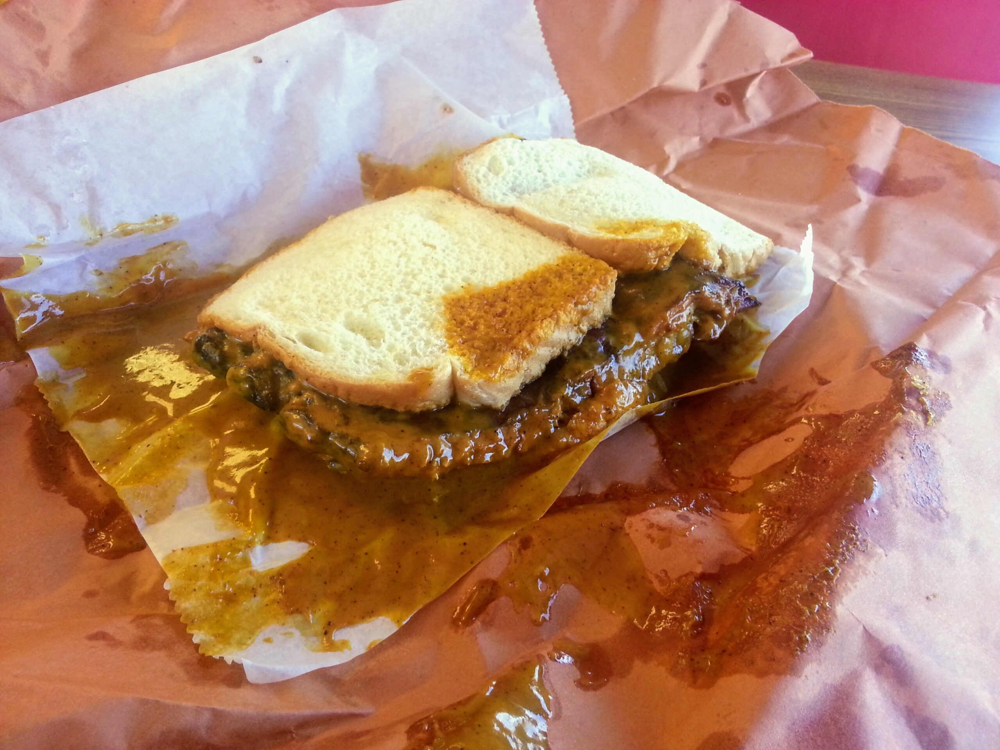
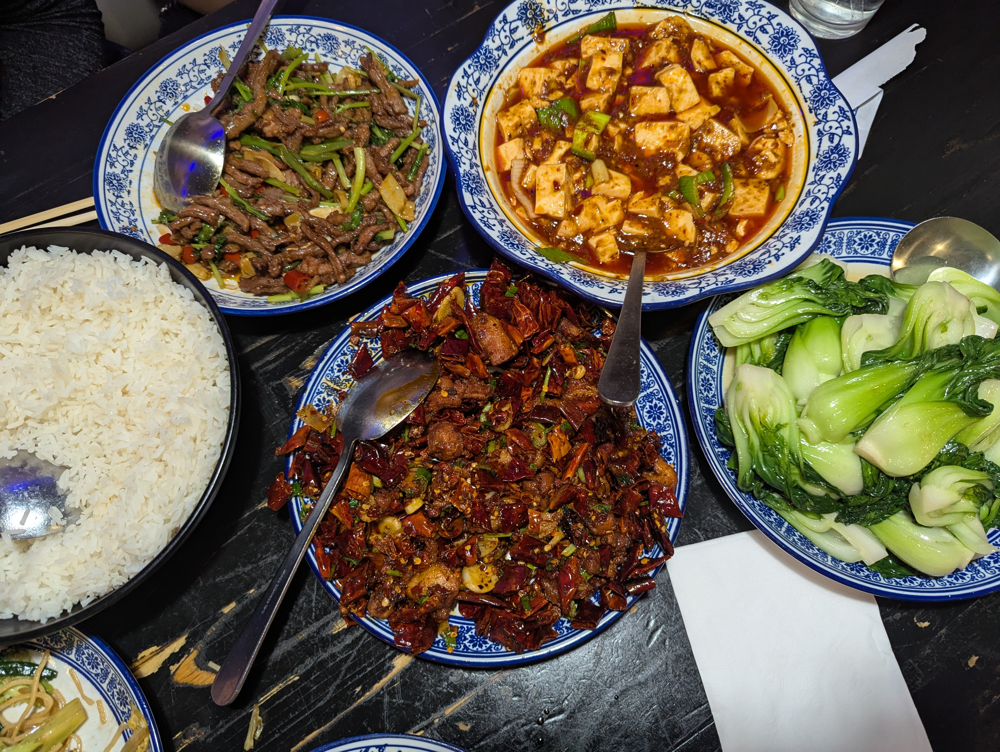
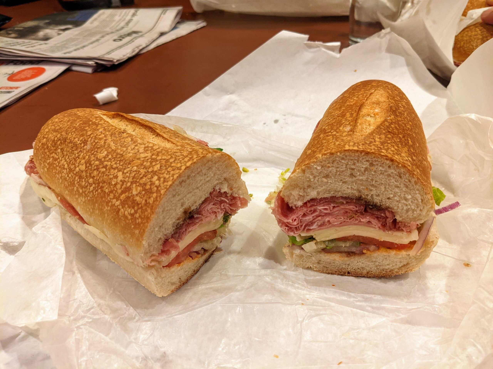
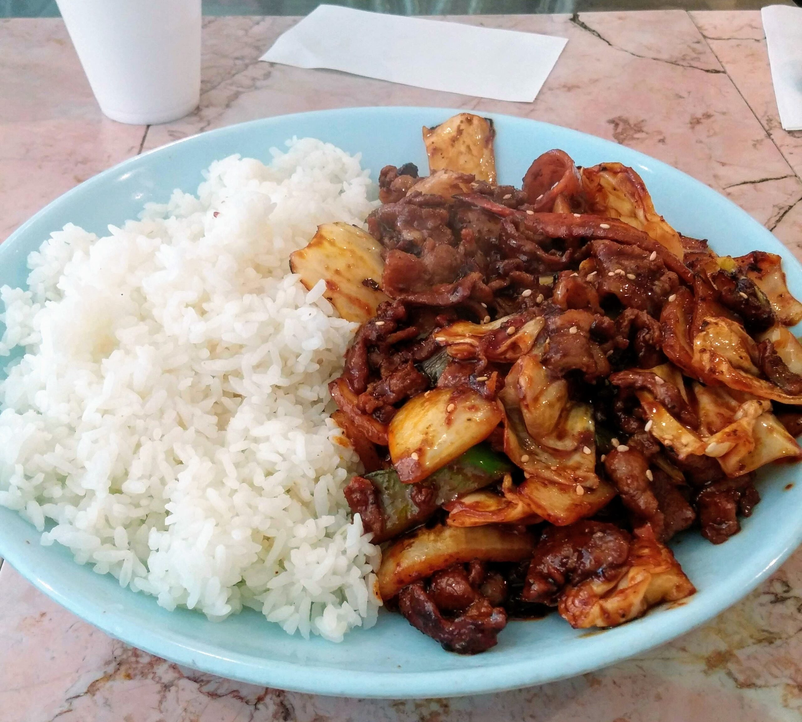
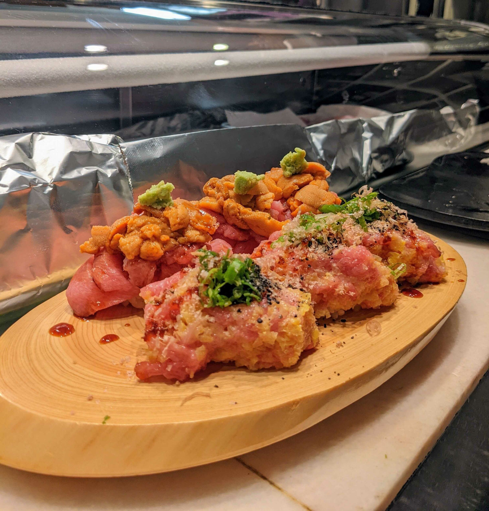
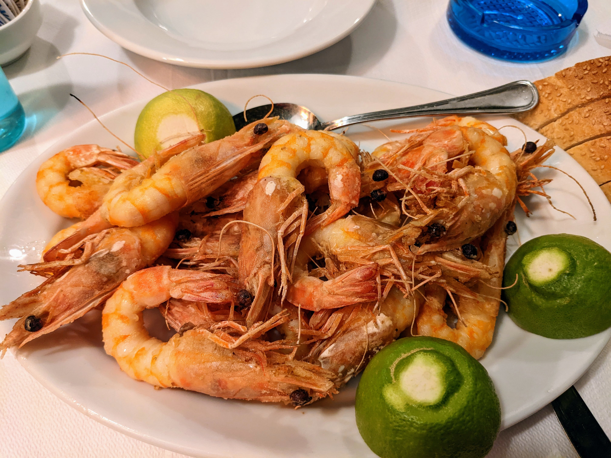
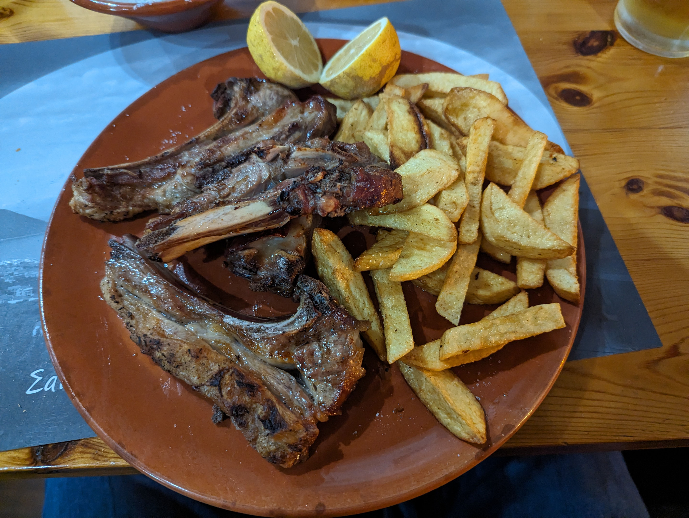
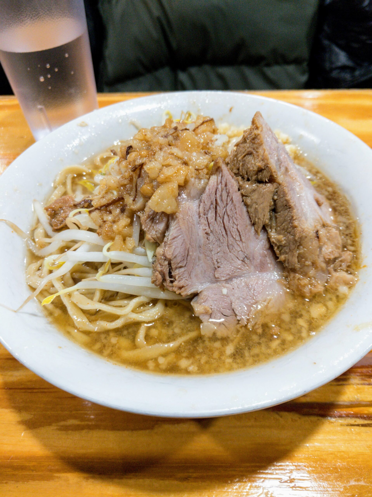

Jenkins Quality Barbecue
Jenkins Quality Barbecue is a small barbecue joint in Jacksonville, Florida. Don’t let the unassuming building deceive you. This place has some serious food. Get a rib sandwich and you will never forget it. The sandwich is a slab of ribs on the bone smothered in sauce between slices of white bread. It’s too messy to actually eat as a sandwich but who cares? There are 3 locations and I think I went to the one downtown (though I’m not sure). If you get a chance to go, it’s definitely worth adding a couple hours to your road trip.
📍Mala Restaurant
If you want one of the most excellent Chinese meals around, head to Mala in Allston. They serve up spicy Szechwan food which I can only assume based on the clientele is extremely authentic. This place is delicious. You can't leave without being stuffed and totally satisfied. Be warned though, every dish is very spice so make sure you check with your friends before bringing them here. If you do, however, you will be a hero!
📍Monica’s Mercato
Monica’s Mercato is a deli and grocery store in the heart of the North End. The Italian sub from Monica’s is hands down the best I have ever had. That’s saying something given that the Italian sandwich originated in New England. This is a must visit for anyone in Boston.
📍Rich J.C.
Rich J.C. is a small Korean restaurant in Ann Arbor, Michigan. It is one long counter with barely enough room to squeeze by behind the happy customers. This place has by far the best Korean food of anywhere I have eaten. There are lots of delicious items on the menu (and a few that might make westerners uncomfortable), but the “spicy pork” stands head and shoulders above the rest. It is the perfect stir fry of pork and veggies. So good, in fact, that I had it two to three times per week while attending UofM.
📍Sushi Murayama
Sushi Murayama is hidden up on the third floor of a building in Honolulu. The Omakase here is one of the best I have had. Everything is creative and beautiful. Each course totally different from the others. Big fat pieces of fish. And of course, Every bit is delicious. Absolute requirement for anyone in Hawaii.
📍Ta Kanaria
(Τα Κανάρια)
At Kanaria they have two things (and a limited amount of appetizers). Prawns and Fish. Both are the best you can find in Athens by a significant margin. The prawns, however, are the best you will have in your entire life. The can hardly even be considered the same food as prawns you have somewhere else. Book a flight just to eat here!
Warning: The restaurant is closed all summer.
Warning: This restaurant is very expensive compared to other restaurants in Athens.
Taverna To Konatsi
(Ταβέρνα Το Κονάτσι)
Taverna To Konatsi is a traditional Greek taverna located in Sapounakeika (Σαπουνακαίικα) in the Arcadia (Αρκαδία) region of Greece. While everything here, including the view, is amazing, the specialty is lamb chops. They are spectacular and you will be served massive plates of them. Make sure to make a reservation, though, in order to get the best cuts of meat. Also be sure to order a plate of sheftalia (σιεφταλιά). They are the best meatballs I have ever had.
📍Yume Wo Katare
Yume Wo Katare is a ramen restaurant in the Porter Square area of Cambridge, MA. There are (usually) only two menu items, regular and large. I would recommend the regular as I think the ratios of ingredients are slightly better and it's still enough to feed anyone. This is by far my favorite restaurant in Boston despite the fact that you might have to sit through a bunch of people "sharing their dreams" with the room. I believe that Yume Wo Katare has the best ramen in America.
📍